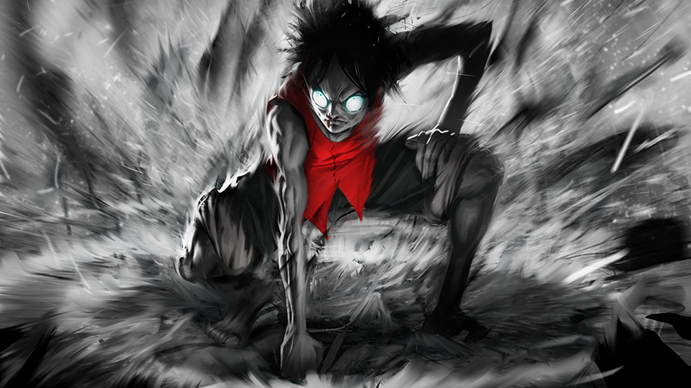

Three New Anime information Trending Globally
This is a magnificent anime series, which involves three main characters – a clumsy teahouse waitress called Fuu Kasumi, and two samurais Mugen and Jin.After accidentally spilling a drink on a customer, Fuu is harassed by a group of samurai, which causes her to seek the help of Mugen, a samurai who defeats the attackers with some wild fighting techniques. He proceeds to attack another Ronin named Jin, who though proves to be a tough opponent as he is a better swordfighter than Mugen. During the battle, they accidentally kill the son of a local magistrate for which they are captured and sentenced to be executed.Fuu proceeds to rescue them and hires them as her personal bodyguards. They join her in the quest of finding a special samurai who smells like sunflowers. The series follows the three characters on their quest, and it is quite a ride, given the fact that the two bodyguards are constantly trying to kill one another.
Learn MoreParasyte (Kiseijû: Sei no kakuritsu) is an anime series by Madhouse, which will keep you glued to the screen, even though it has only one season. The 24 episodes cover the sci-fi adventure of a boy named Shinichi Izumi who gets infected by a parasite which has attacked human beings and destroyed them by butchering and consuming them. But the 17-year-old boy gets saved by his earphones, and the parasite enters his body via his right hand. Over time, Shinichi and the monster who is named Migi learn how to co-exist together in order to both survive. So, now he is half a boy half a monster on a quest for survival.
Learn More
The story revolves around class 3-E of students of Kunugigaoka Middle School who are all misfits and get assigned a new homeroom teacher who they soon name Koro-Sensei (unkillable teacher). The problem with the new teacher is that he is a strange creature with tentacles who turns out to be on the most wanted list by the government because he has destroyed nearly two-thirds of the moon leaving it permanently crescent shaped. The strange creature teaches the students regular classes along with a class about the ways of assassination.The students get together and proceed to try to assassinate their teacher. This turns out to be a seemingly impossible task because Koro Sensei is able to fly at Mach 20 speed, and also turns out to be the best teacher which the group of middles school misfits has ever had.
Learn MoreThe story is about minor god Yato who by accident runs into middle school student Hiyoki Iki, and their meeting changes both of their fates.Hiyoki Ili is an ordinary schoolgirl who one day gets involved in a bus accident as she jumps in to protect a complete stranger. The stranger turns out to be Yato, who’s only goal and dream is to have millions of worshipers and is ready to do any kind of odd job for 5 yen.
After the accident, the soul of the young girl begins to flip out of her body and goes into a parallel world called the Near Shore where there are all kinds of people and creatures as well as to the Far Shore where the human souls and demons linger.
As her soul floats around the parallel worlds, the girl meets Yato, who offers to fix the problem with her physical body. The two of them accompanied by Yato’s Regalia weapon Yukine go on numerous adventures together, and the result is an entertaining, sometimes thrilling adventure, as well as an intriguing story of how their relationship evolves through time as they question and struggle with their identities, their past as well as their friendship.
Nie Li, one of the strongest Demon Spiritist in his past life standing at the pinnacle of the martial world , however he lost his life during the battle with Sage Emperor and the six deity ranked beast, his soul was then reborn back in time back to when he is still 13. Although he’s the weakest in his class with the lowest talent at only Red soul realm, with the aid of the vast knowledge which he accumulated in his previous life, he trained faster then anyone. Trying to protect the city which in the coming future was being assaulted by beast and ended up being destroyed as well as protecting his lover, friends and family who died by the beast assault. and to destroy the Sacred family whom abandon their duty and betrayed the city in his past life.
SEE MORE
10 years ago, after “the Gate” that connected the real world with the monster world opened, some of the ordinary, everyday people received the power to hunt monsters within the Gate. They are known as "Hunters". However, not all Hunters are powerful. My name is Sung Jin-Woo, an E-rank Hunter. I'm someone who has to risk his life in the lowliest of dungeons, the "World's Weakest". Having no skills whatsoever to display, I barely earned the required money by fighting in low-leveled dungeons… at least until I found a hidden dungeon with the hardest difficulty within the D-rank dungeons! In the end, as I was accepting death, I suddenly received a strange power, a quest log that only I could see, a secret to leveling up that only I know about! If I trained in accordance with my quests and hunted monsters, my level would rise. Changing from the weakest Hunter to the strongest S-rank Hunter!
SEE MOREIn the whole world there lays twelve paths to climb Tower of God, and in legends these twelve pathways leads toward legendary road of immortality. However these paths in the Tower of God, are far too long, without end. In ancient times there once were many types of martial arts, sadly the world underwent terrible changes, and only three were left: Flame, Dragon and Star Martial Arts. Generations of experts of those three martial arts are searching for the road of immortality. A Star Martial Arts practitioner on his journey of lifetime, plans to become the Highest God.
SEE MOREIn this world, respect is earned with martial arts. Weak martial artists have strengths of tens of thousands of pounds, capable of cracking boulders. And the strong ones can cut off rivers and split mountains.
There are even martial kings who know everything and can travel across the universe. Martial art decides your fate as well as your life and death. The weak is humiliated while the strong looks down on the world. This is a a world where the strong bullies the weak.
People's statuses are decided by the levels of their cultivation of martial arts. Each faction fights for the title of "The Strongest". Only the strong ones have the right to survive. Even if you are from the same clan or faction, if you are weak, then you will be bullied and kicked out without mercy.